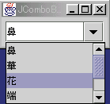

■ JComboBoxクラス
JComboBoxは複数の項目の中から1つを選択するのに使うコンポーネントです。通常は、選択した項目だけが表示されており、表示域の右側をマウスで押す、あるいはクリックすると選択項目のリストがメニューの形で表示されます。
選択された項目を表示する部分に直接文字列を入力することもできます。しかし、入力した内容はリストには反映されません。ActionListenerのActionPerformedメソッドなどで、明示的に項目を追加/変更すれば、項目リストに反映できます。
JComboBoxは、ActionEvent、ItemEventのイベントソースです。選択された項目の表示域でreturnキーを押すか、項目リストでの選択が完了するとActionEventが、また、項目リスト上での選択が変化するとItemEventがリスナーに送られます。
詳細はJComboBoxクラスのAPIを参照してください。
■ コンストラクタ
- JComboBox()
- 空のJComboBoxオブジェクトを生成します。
- JComboBox(Object[] items)
- 指定された配列要素を項目とするJComboBoxオブジェクトを生成します。
- JComboBox(Vector items)
- 指定されたVector要素を項目とするJComboBoxオブジェクトを生成します。
■ メソッド
●項目の追加/削除
- void addItem(Object anObject)
- 項目リストにobjectを追加します。デフォルトのJComboBoxModelを使っている時に有効です。
- void insertItemAt(Object object, int index)
- indexで指定した位置にobjectを挿入する。デフォルトのJComboBoxModelを使っている時有効です。
- void removeItemAt(int index)
- 指定した番号の項目を削除。
- void removeItem(Object object)
- 指定した項目を削除。
- void removeAllItems()
- すべての項目を削除。
●表示/編集
- int getMaximumRowCount()
- スクロールバーを使用しないで表示できる最大の項目数を返します。
- void setMaximumRowCount(int count)
- スクロールバーを使用しないで表示できる最大の項目数を設定。
- boolean isEditable()
- 表示域が編集可能な場合はtrueを返します。
- void setEditable(boolean b)
- 表示域が編集可能かどうかを指定。
●項目の選択
- int getSelectedIndex()
- 選択されている項目の番号を返します。
- void setSelectedIndex(int index)
- 指定した番号の項目を選択します。
- Object getSelectedItem()
- 選択されている項目を返します。
- void setSelectedItem(Object object)
- 選択する項目を設定。
- Object getItemAt(int index)
- 指定された番号の項目を返します。先頭は0。
- void int getItemCount()
- 選択リストの項目数を返します。
●イベント関係
- addActionListener(ActionListener l)
- ActionEventリスナーを設定。
- addItemListener(ItemListener l)
- ItemEventリスナーを設定。
- String getActionCommand()
- ActionEventのコマンド名を返します
- setActionCommand(String str)
- ActionEventのコマンド名を設定。
■ サンプルプログラム
下に，JComboBoxから文字を選択するサンプルプログラムを示します。JComboBoxに入れるデータを文字列配列に用意し、それを使ってJComboBoxオブジェクトを生成しています。項目数が6つであるのに対し、表示する項目を4としたので、スクロールバーがつきます。また、ActionListenerを設定し、actionPerformedメソッド内で、イベント内容を標準出力に表示するようにしました。
import java.awt.*;
import java.awt.event.*;
import javax.swing.*;
class ComboBoxExample extends JPanel implements ActionListener{
JComboBox select;
ComboBoxExample() {
String list[] = {"鼻", "華", "花", "端", "葉菜", "波奈"};
select = new JComboBox(list); //項目を指定してJComboBox生成
select.setEditable(true); //編集を可能にする
select.setMaximumRowCount(4); //表示項目数は4とする
select.addActionListener(this); //リスナーを設定する
add(select); //JComboBoxをJPanelに置く
}
public void actionPerformed(ActionEvent e) {
//選択された項目をテストのために表示
System.out.println(e.paramString() + " " + select.getSelectedItem());
}
public static void main(String args[]){
JFrame f = new JFrame("JComboBox Example");
ComboBoxExample example = new ComboBoxExample();
f.getContentPane().add(example, BorderLayout.CENTER);
f.pack();
f.setVisible(true);
}
}

左図は，このサンプルプログラムの実行結果です。
Ariga, Taeko
Last modified: Aug 18, 20:10:00 JST 2001